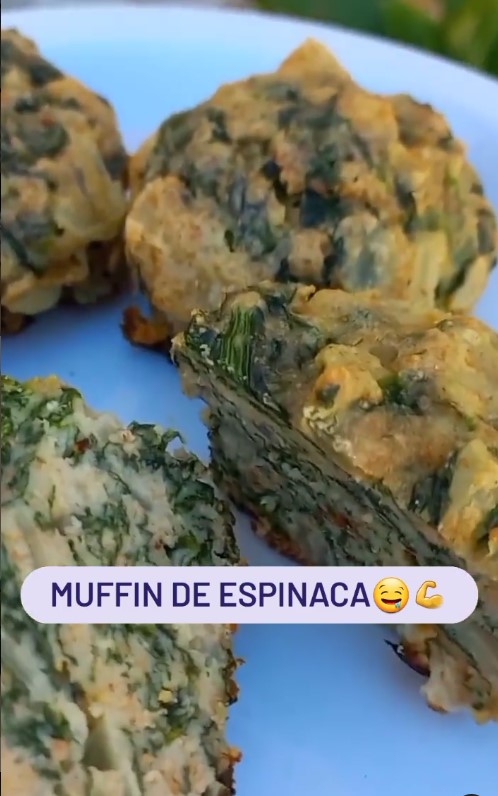
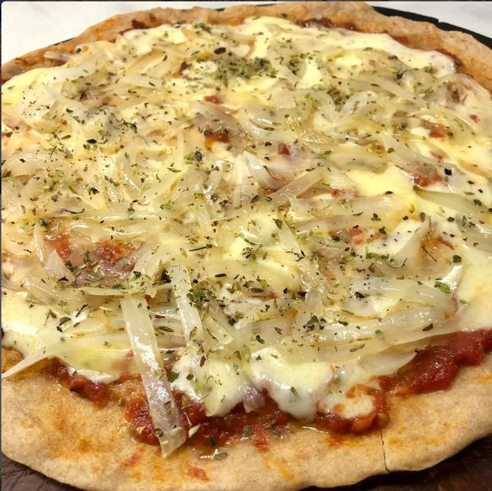

Recetas Saladas
TARTA DE ATÚN

🌸Ingredientes:
2 latas de atún al natural
1 huevo
1 zanahoria
1/2 morrón
1 cebolla grande
2 cdas de queso crema descremado
200gr de queso cremoso
2 Tapas de tarta
🌸Preparación:
Pelar y cortar la cebolla en cuadraditos, agregarle la zanahoria rallada y el morrón cortado en cuadraditos.
Rehogar los ingredientes y agregar las latas de atún, el huevo y el queso crema.
Mezclar todo bien .
Colocar el relleno en las tapas de tarta y agregarle el queso cremoso. Tapar y hornear por 30 minutos a
fuego máximo.
Hasta que este doradita!!
Y listo!! ¿Que les pareció??
MUFFIN DE ESPINACA

🌸Ingredientes:
2 latas de atún al natural
1 huevo
1 zanahoria
1/2 morrón
1 cebolla grande
2 cdas de queso crema descremado
200gr de queso cremoso
2 Tapas de tarta
🌸Preparación:
Pelar y cortar la cebolla en cuadraditos, agregarle la zanahoria rallada y el morrón cortado en cuadraditos.
Rehogar los ingredientes y agregar las latas de atún, el huevo y el queso crema.
Mezclar todo bien .
Colocar el relleno en las tapas de tarta y agregarle el queso cremoso. Tapar y hornear por 30 minutos a
fuego máximo.
Hasta que este doradita!!
Y listo!! ¿Que les pareció??
PIZZA DE HARINA INTEGRAL
Ingredientes :
✅ 400gr de harina integral
✅300 ml de agua tibia ✅7 gr de levadura seca (la de sobre)
✅1 cdita de sal ✅1 cda de aceite (yo use de oliva ,pero puede ser de maiz o girasol)
Preparacion:
1) Colocar la levadura en polvo en 100ml de agua tibia, revolver y dejar reposar 10 minutos
2) En un recipiente colocar la harina integral junto con la sal formando una corona, en el centro incorporarle la levadura disuelta previamente , e ir mezclando desde el centro hacia afuera .
3) incorporar el resto del agua y el aceite y continuar amasando .
4) una vez formada la masa dejar reposar tapando el recipiente en un lugar calido por 45 minutos .
5) una ves levada la masa , desgasificarla y separarla en 3 bollitos y volver a dejar reposar por 30 minutos .
6) por ultimo estirar los bollitos en asaderas aptas para horno y colocarles la cubierta que mas deseen!!! Yo en mi caso le puse salsa de tomate , queso muzzarella y cebolla salteadita!!!! Y al hornoo! Por 15 minutos aprox hasta que este la muzzarella derretida y la masa crocante🤗🤗🤗💃💃 Estas cantidades rinden para 3 para pizzas grandes🍕🍕 Home